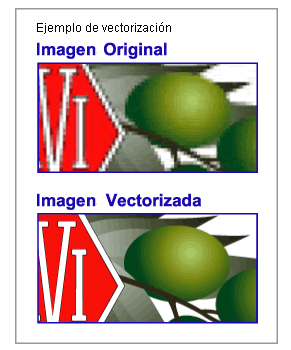
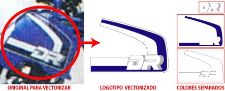
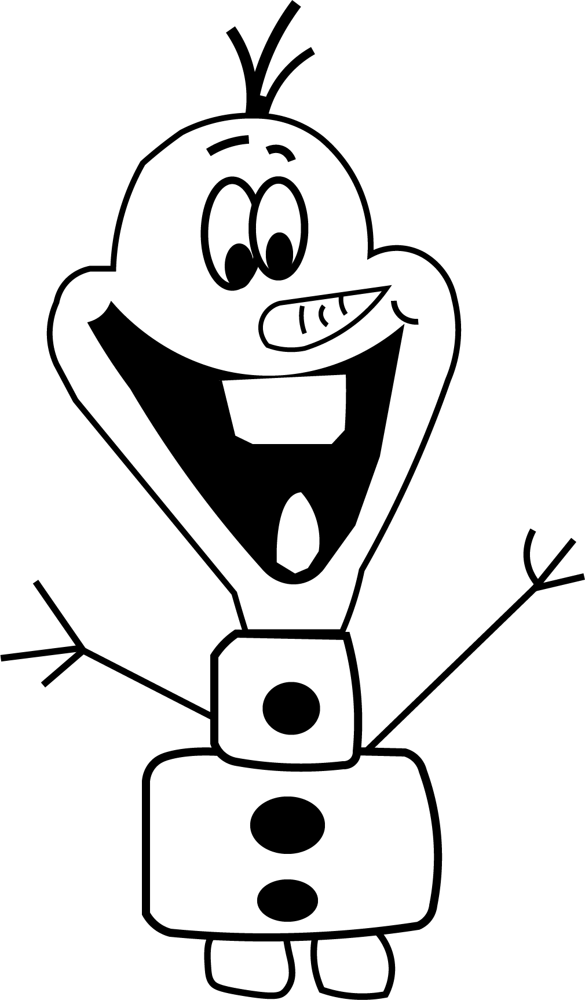

¿Qué es la vectorización?
La vectorización consiste en convertir imágenes que están formadas por píxeles en imágenes formadas por vectores.
Esto se logra dibujando todos los contornos y rellenos de la imagen mediante curvas Bezier.
Los dibujos obtenidos mediante la vectorización son imágenes de contornos perfectamente definidos, que pueden ampliarse o reducirse a cualquier tamaño sin que se modifique su alta calidad.
Estos archivos pueden usarse en PC y en Macintosh.
Las imágenes vectorizadas o trazadas se usan en todos los sistemas de impresión, pero especialmente en serigrafía, bordados, rotulación, grabados e impresión de gran formato, donde se necesitan contornos perfectos que no se deformen con una gran ampliación o se requieren trazos que pueda reconocer un plotter de corte o una fresadora.
Proceso de vectorización, corte en plotter y rotulación de logotipo:
La vectorización puede aplicarse a logotipos u otras imágenes anteriormente dibujadas, fotografiadas o impresas, puede tratarse de mascotas, isotipos o nombres con letras antiguas cuya tipografía ya no existe o no puede encontrarse.
Para elaborar una vectorización puede usarse como punto de partida un escaneo, una foto, un impreso o una fotocopia.
Formas de vectorización
Un dibujo vectorizado para usar en corte a 1 color tiene sus contornos seguidos, sin trozos superpuestos ni saltos en los trazados y sus ángulos están redondeados para facilitar el corte y posterior pelado. Puede usarse también en serigrafía y en offset.
Un dibujo vectorizado para usar en serigrafía está realizado en colores planos separados, con un ligero montante entre ellos para facilitar el registro de los colores. También puede usarse para cortar vinilos de color o imprimir en offset pero los colores se verán planos sin degradaciones ni tonalidades a menos que se modifique el vectorizado.
Un dibujo vectorizado para offset puede tener muchas tonalidades y degradaciones, no es necesario que tenga contornos seguidos y puede tener muchos trozos superpuestos tanto de sombras como de luces. Sólo sirve para usar en cuatricromía.